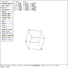
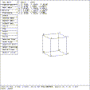
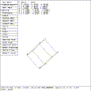

 Figure (es8-xrot): Solid Edit Rotation of 45 Degrees about X
The rotate operation is initiated by either selecting Rotate on the menu screen with the mouse, by depressing the Solid Rotate button on the button box, or by entering the press srot command on the keyboard.
mged> Select the ``Rotate'' entry in the solid edit menu
mged> p 45 0 0
mged>
The parameter p command is used to make precise rotation changes. The command is entered in the form p a b c where a, b, and c are the angles (in degrees) of rotation about the x, y, and z axes respectively. Point 1, the vertex, remains fixed, and the solid is rotated about this point. A positive angle of rotation is counter-clockwise when viewed in the positive direction along an axis.
The order of rotation is not commutative. Rotation takes place about the Z axis, Y axis, and X axis in that order. Figure (es8-xrot) shows the rotation of 45 degrees about the X axis.
The values entered after the p are absolute - the rotations are applied to the primitive as it existed when solid rotation was first selected. Thus entering p 0 0 0 will undo any rotations performed since solid rotation was begun.
 Figure (es8-yrot): Solid Edit Rotation of 45 Degrees about Y
mged> p 0 45 0
mged>
Figure (es8-yrot) displays the solid after it has been rotated about the Y axis.
 Figure (es8-zrot): Solid Edit Rotation of 45 Degrees about Z
mged> p 0 0 45
mged>
Figure (es8-zrot) displays the solid after it has been rotated about the Z axis.
mged> p 0 0 0
mged>
This restores the original orientation of the solid.
{kind=link}
{kind=link}
{kind=link}